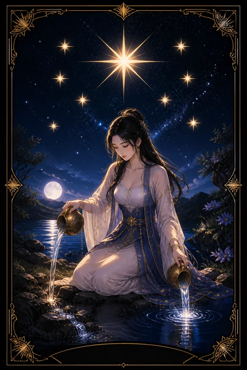

XVII 별 카드 — 폭풍 뒤의 조용한 희망
별 카드 한눈에 보기
별 카드 상징 읽기

동네보살의 카드 그림은 전통 라이더–웨이트 덱의 뜻을 새 그림으로 옮긴 것입니다. 아래 상징 설명은 전통 덱의 그림을 기준으로 합니다.
하늘 한가운데에는 여덟 개의 꼭짓점을 가진 커다란 노란 별이 빛나고, 그 둘레를 작은 흰 별 일곱 개가 감싸고 있습니다. 큰 별은 길잡이가 되는 희망을, 작은 별들은 삶 곳곳에 흩어진 작은 축복을 뜻합니다.
벌거벗은 여인이 한쪽 무릎을 꿇고 두 개의 항아리로 물을 붓습니다. 가릴 것 없는 모습은 꾸밈없이 드러낸 진심과 상처받기 쉬운 솔직함을 나타냅니다.
한 항아리의 물은 연못으로, 다른 항아리의 물은 땅으로 흘러 다섯 갈래로 퍼집니다. 마음과 현실 양쪽에 동시에 생기를 되돌려 주는 치유를 상징합니다. 뒤편 나무 위에 앉은 새는 영혼의 소리를 전하는 존재로 해석되며, 높은 곳에서 다가오는 영감을 암시합니다.
여인의 한 발은 물 위에, 다른 발은 땅 위에 놓여 있어 직관과 현실 감각을 함께 딛고 선 균형을 보여줍니다. 멀리 보이는 언덕과 탁 트인 들판은 폭풍이 지나간 뒤 다시 넓어진 시야를 상징합니다.
별 카드 정방향 뜻
정방향 별은 탑의 폭풍이 지나간 뒤 찾아오는 고요한 밤과 같습니다. 크게 흔들렸던 마음이 조금씩 가라앉고, 다시 내일을 생각해 볼 여유가 생기는 시기입니다.
이 카드의 희망은 요란하지 않습니다. 당장 눈에 띄는 변화보다는 마음이 조금 덜 무거워지거나, 오랜만에 좋아하는 일을 떠올리게 되는 식으로 스며듭니다. 그래서 더디게 느껴질 수 있지만 쉽게 꺼지지 않는 힘을 지녔습니다.
별은 또한 영감과 순수한 바람을 뜻합니다. 계산을 잠시 내려놓고 정말 하고 싶었던 일을 떠올려 보시기 좋은 때입니다. 남에게 보여주기 위한 목표보다 마음 깊은 곳에서 우러나온 소망이 이번에는 길잡이가 되어 줍니다.
이 시기에는 자신에게 너그러워지는 것이 가장 좋은 돌봄이 됩니다. 조금 느리더라도 매일 한 걸음씩 나아지고 있다는 사실을 믿어 주세요.
별 카드 역방향 뜻
역방향 별은 희망이 사라졌다는 뜻이라기보다, 잠시 구름에 가려 보이지 않는 상태에 가깝습니다. 노력해도 달라지는 것이 없다고 느끼거나, 스스로를 믿는 마음이 약해져 작은 일에도 쉽게 지치는 흐름입니다.
이럴 때는 너무 멀리 있는 목표를 올려다보는 것이 오히려 기운을 빼앗습니다. 오늘 할 수 있는 아주 작은 일 하나를 해내고 그것을 인정해 주는 방식으로 믿음을 조금씩 되찾는 편이 좋습니다.
또한 이 카드는 남의 기대를 채우느라 자신의 샘이 마른 상태를 비추기도 합니다. 다른 사람에게 물을 부어 주기만 하고 정작 나를 채우지 못했다면, 잠시 멈추고 스스로를 돌보는 시간을 먼저 확보해 보시길 권합니다. 믿을 만한 사람에게 지금의 지친 마음을 털어놓는 것만으로도 가려진 별빛이 한결 또렷해질 수 있습니다.
연애에서 별 카드
솔로라면 지난 상처가 아물면서 다시 누군가를 만나고 싶은 마음이 조용히 피어나는 시기입니다. 억지로 소개를 받거나 조급하게 인연을 찾기보다, 편안하게 나다운 모습으로 지낼 때 자연스러운 호감이 다가옵니다. 첫눈에 불꽃이 튀기보다 볼수록 마음이 놓이는 사람일 가능성이 큽니다.
연애 중이라면 한동안 서먹했거나 힘든 일을 함께 겪은 관계가 회복되는 흐름입니다. 서로에게 솔직한 마음을 털어놓을수록 신뢰가 깊어지고, 둘이 함께 그리는 미래에 대한 기대도 새로 생깁니다. 거창한 이벤트보다 매일의 다정한 말 한마디가 관계에 물을 주는 역할을 합니다. 조바심을 내려놓고 관계가 스스로 자라날 시간을 주세요. 마음을 여는 속도가 서로 다르더라도 그 차이를 너그럽게 기다려 주는 태도가 이 카드의 사랑법입니다.
재회·속마음 질문에서 별 카드
재회 질문에 별이 나오면 상대의 마음속에 당신에 대한 기억이 원망보다는 고마움과 그리움의 형태로 남아 있을 가능성을 봅니다. 헤어진 뒤 시간이 흐르며 서로 감정이 조금씩 정화되었다는 신호이기도 합니다.
다만 별의 속도는 느립니다. 당장 연락이 오거나 극적으로 다시 만나는 그림보다는, 부담 없는 안부에서 시작해 천천히 거리를 좁히는 흐름이 어울립니다. 재촉하지 않고 담백하게 다가간다면 새로운 관계의 가능성을 기대해 볼 수 있습니다. 과거의 잘잘못보다 지금 서로에게 줄 수 있는 편안함에 집중하는 것이 좋습니다.
일·금전에서 별 카드
일에서는 지친 시기를 지나 다시 의욕이 살아나는 흐름입니다. 곧바로 큰 성과가 나오지 않더라도 지금 쌓는 실력과 평판이 시간이 지나며 좋은 기회로 이어질 수 있습니다. 창작, 기획, 교육, 돌봄처럼 사람에게 영감이나 위로를 주는 분야와 특히 잘 맞는 카드입니다.
이직이나 새로운 도전을 고민 중이라면 막연한 꿈으로만 두지 말고 작은 준비부터 시작해 보시기 좋은 때입니다. 금전 면에서는 급격한 이익보다는 천천히 나아지는 흐름을 보여주니, 무리한 한 방보다 꾸준히 모으는 습관이 어울립니다. 희망적인 분위기에 들떠 예산 계획을 건너뛰지만 않는다면 안정적인 흐름을 기대할 수 있습니다. 당장의 보상보다 오래 함께 갈 수 있는 일과 사람을 고르는 안목이 이번 시기의 가장 큰 자산이 됩니다.
별 카드는 예일까 아니오일까
천천히 좋아지는 흐름을 뜻하므로 정방향에서는 예로 읽되, 빠른 결과보다는 시간을 두고 이루어지는 긍정입니다. 역방향이면 희망은 남아 있으나 스스로 믿음을 되찾는다는 조건이 붙습니다.
자주 묻는 질문
별 카드 역방향은 나쁜 뜻인가요?
역방향 별은 희망이 사라졌다는 뜻이라기보다, 잠시 구름에 가려 보이지 않는 상태에 가깝습니다. 노력해도 달라지는 것이 없다고 느끼거나, 스스로를 믿는 마음이 약해져 작은 일에도 쉽게 지치는 흐름입니다.
별 카드가 연애 질문에 나오면요?
솔로라면 지난 상처가 아물면서 다시 누군가를 만나고 싶은 마음이 조용히 피어나는 시기입니다. 억지로 소개를 받거나 조급하게 인연을 찾기보다, 편안하게 나다운 모습으로 지낼 때 자연스러운 호감이 다가옵니다. 첫눈에 불꽃이 튀기보다 볼수록 마음이 놓이는 사람일 가능성이 큽니다.
타로 카드는 어떻게 뽑나요?
타로 카드 페이지에서 카드를 섞으면 메이저 아르카나 22장이 펼쳐집니다. 마음이 가는 세 장을 고르면 과거·현재·미래 자리에 놓이고, 한 장씩 뒤집어 자리와 방향에 맞는 풀이를 읽습니다. 정방향과 역방향은 섞는 순간 정해집니다.